Component images are independently centered and scaled to compare form. The ship overlay keeps all component offsets together. Magenta: concept; cyan: mesh; white: matching edges. Hue map: green close, magenta high error. Saturation map: blue close, yellow high error.
| View | Silhouette IoU | Area ratio | Mean hue error ° | Saturation error pp |
|---|---|---|---|---|
| Hull | 0.644 | 0.7983825925063999 | 34.209861755371094 | 14.51871109008789 |
| Wing | 0.540 | 0.8076980950374673 | 11.997607231140137 | 9.817509651184082 |
| LandingGear | 0.561 | 0.8532332651049959 | 5.361084938049316 | 21.31102180480957 |
| Drive | 0.646 | 0.7280719794344473 | 6.562911033630371 | 27.868942260742188 |
| ShipQuarter | 0.535 | 0.6767384371037363 | 35.22624206542969 | 10.807845115661621 |
| mount_transforms | 0.000 | — | — | — |
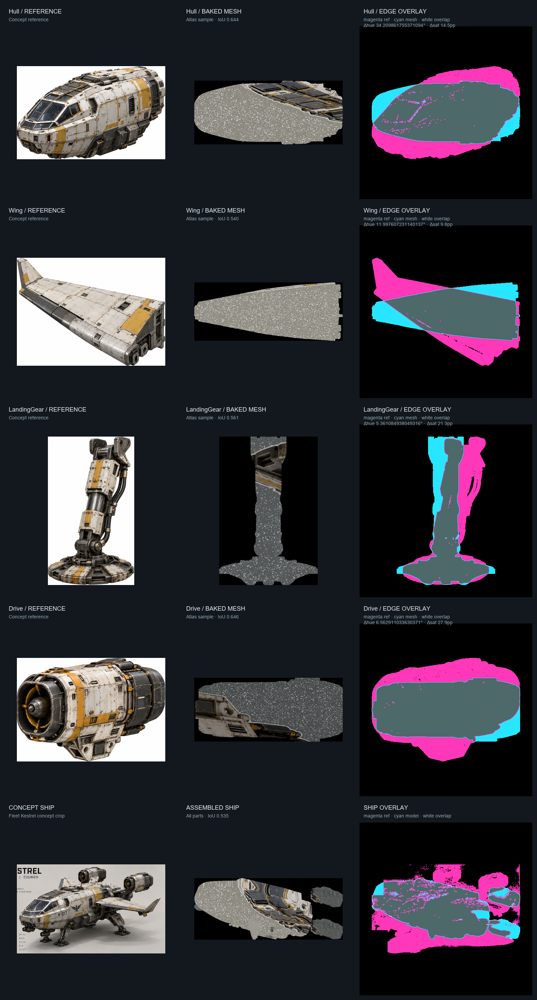
Hue map: green close, magenta high error. Saturation map: blue close, yellow high error.
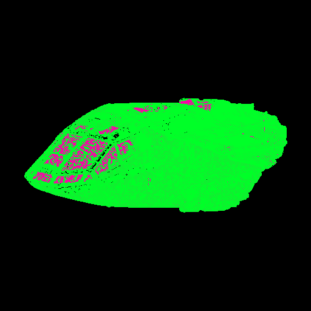
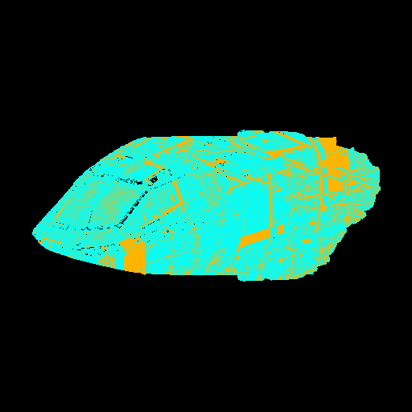
Hue map: green close, magenta high error. Saturation map: blue close, yellow high error.
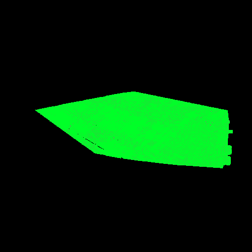
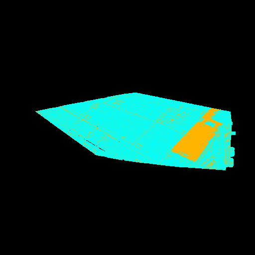
Hue map: green close, magenta high error. Saturation map: blue close, yellow high error.
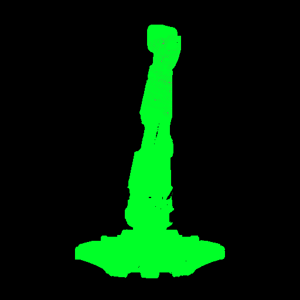
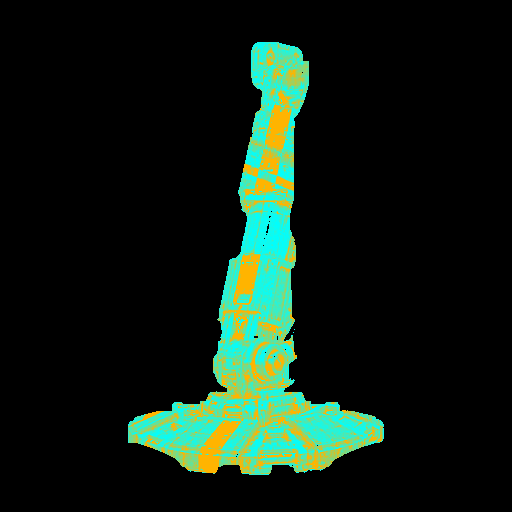
Hue map: green close, magenta high error. Saturation map: blue close, yellow high error.
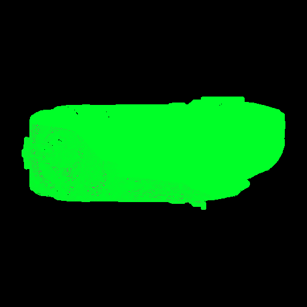
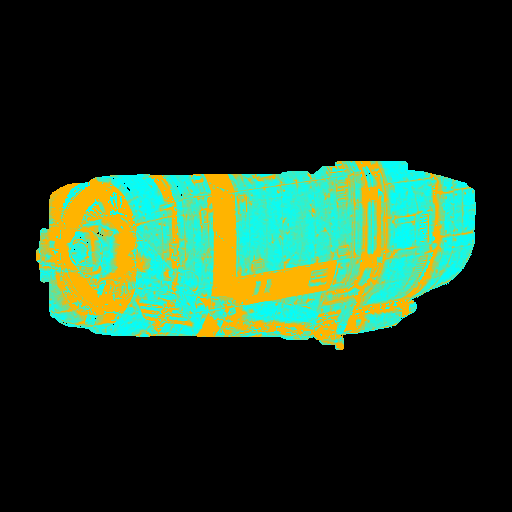
Hue map: green close, magenta high error. Saturation map: blue close, yellow high error.
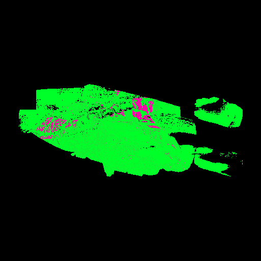
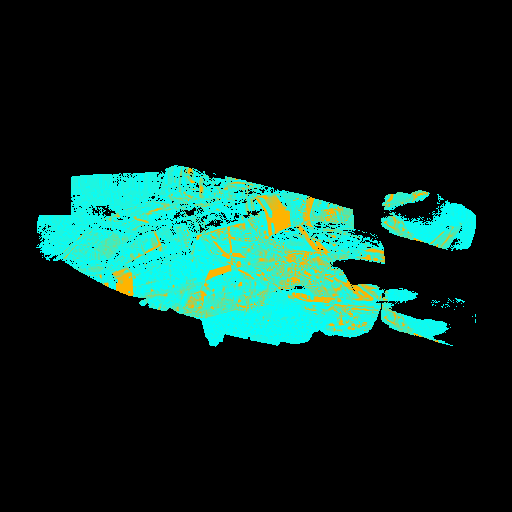